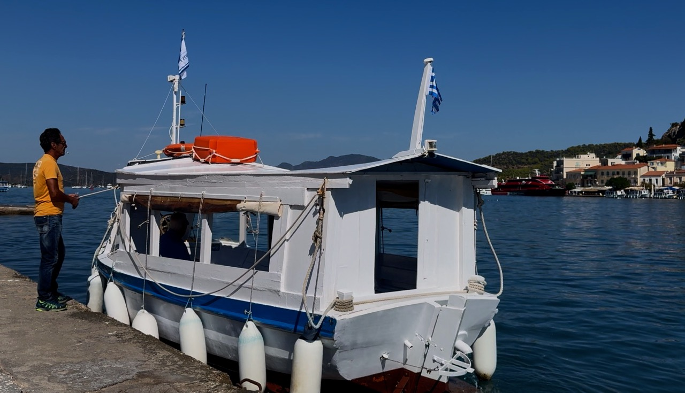
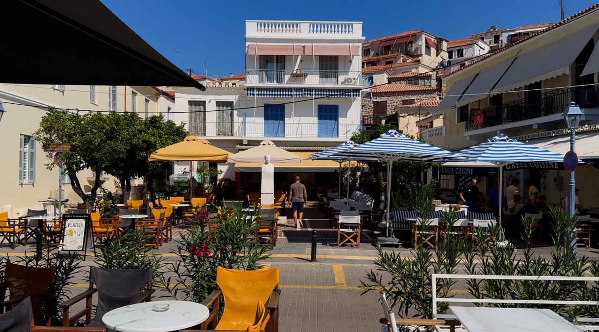
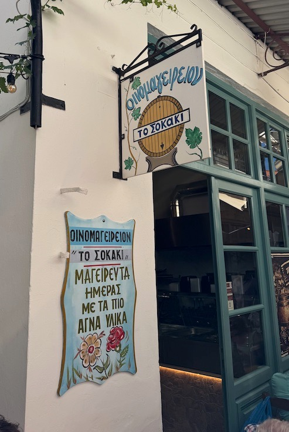
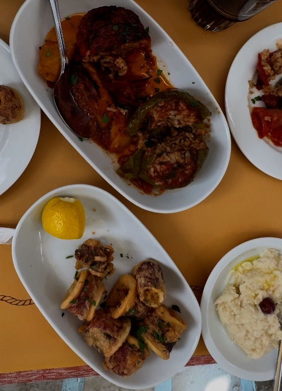
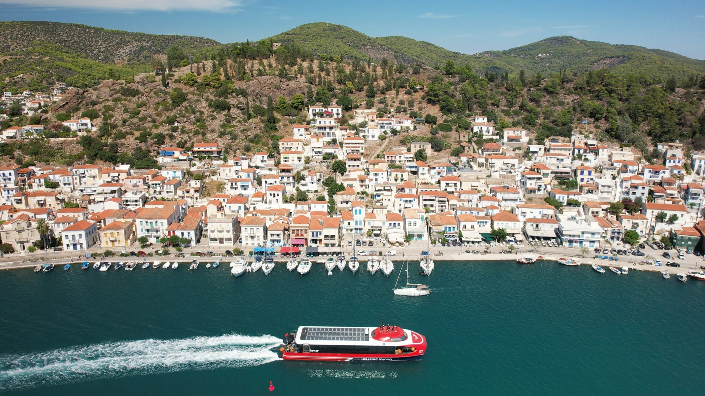
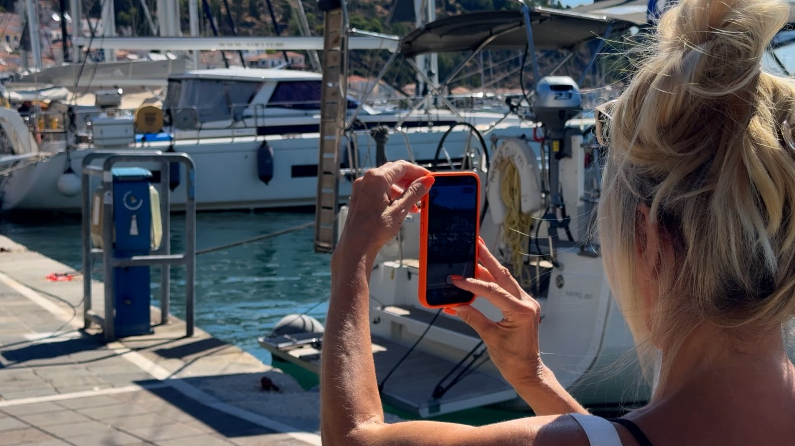

Sometimes the best days on holiday are the ones that don't involve much planning. Our day trip to Poros, an attractive little island in the Saronic Gulf, was a perfect example. Staying in Ermioni on the Peloponnese, we decided to drive to Galatas, leave the car behind and hop across the narrow channel to explore.
What followed was a scenic coastal drive, a slightly rickety little boat, a wander through the backstreets and a lunch in a traditional Greek taverna that cost just €31 for two, including drinks. No grand itinerary, no frantic sightseeing, just one of those days that reminds us why we love exploring Greece.
THE SCENIC DRIVE FROM ERMIONI TO GALATAS
The drive from Ermioni to Galatas takes around 50–55 minutes, covering approximately 40 kilometres along a wonderfully scenic coastal road.
There are plenty of bends and a few hairpin sections, so it's not a road to tackle in a hurry. However, we found it comfortably wide enough for two cars, and the scenery made every twist and turn worthwhile.
In fact, we barely saw another car for much of the journey. We could probably count the passing traffic on one hand, which made a pleasant change from battling through busy holiday traffic.
Rather than seeing the drive as simply a way of getting to Poros, we enjoyed it as part of the day itself. It's a lovely reminder that travelling around the Peloponnese can be as rewarding as the destination.
Eventually, we arrived in Galatas, the small mainland town directly opposite Poros. From here, the island is just a short hop across the water.
CROSSING TO POROS ON A LITTLE BOAT

One of the easiest things about visiting Poros is that you don't need to take the car across. We found free parking along the Galatas waterfront, left the car behind and headed for the boats.
Regular ferry services operate across the channel, but we opted for one of the small passenger boats that shuttle backwards and forwards between the mainland and the island.
Luxury vessels they are not. Our little boat had a distinctly old-fashioned, slightly rickety appearance, but that was precisely what made it so appealing.
The captain looked as though he'd been making the crossing for years, casually transporting passengers from one side to the other as if it were the most ordinary thing in the world.
Meanwhile, we were treating it as part of our holiday adventure.
The crossing is only around 320 metres and takes approximately five minutes. It's a wonderfully simple way to arrive on the island, with Poros and its waterfront opening up in front of you as you approach.
For us, it was much more fun than simply driving off a ferry and heading straight for a car park.
EXPLORING POROS: LOOK BEYOND THE HARBOUR
Arriving in Poros, it's tempting to stay beside the waterfront. The harbour is lovely, with boats bobbing gently on the water and cafés, restaurants and bars lining the shore.
There's plenty of choice, from traditional Greek tavernas to more contemporary cafés and bars with a distinctly Bali-inspired feel. You could easily find a table, order a drink and spend a happy afternoon watching the world go by.
But we discovered that Poros becomes even more interesting when you wander away from the water.

We headed into the little side streets, where the atmosphere felt more intimate and less focused on the harbour views. There were gift shops selling jewellery, clothes and the usual Greek holiday souvenirs, alongside ice-cream shops and small stores offering all sorts of things you never knew you needed until you were on holiday.
It's the sort of place where you set off for a quick look around and somehow end up taking the long way back.
And that's when we stumbled across one of our favourite discoveries of the day: To Sokaki, a traditional Greek taverna tucked away in a backstreet.
TO SOKAKI: A TRADITIONAL GREEK TAVERNA WORTH FINDING


We love finding places like this. Not necessarily the smartest restaurant or the one with the best waterfront view, but somewhere with character, friendly people and good, honest food.
To Sokaki, whose Greek name is Οινομαγειρείον Το Σοκάκι, was exactly that sort of place.
Tucked away from the busier waterfront, it had the welcoming, unpretentious atmosphere we associate with traditional Greek tavernas. Wooden tables and chairs, a relaxed setting and none of the fuss that sometimes comes with restaurants trying too hard to impress.
The official Poros tourism description refers to its atmosphere as reminiscent of another era, almost like stepping into an old Greek film. Having visited, we could see exactly what they meant.
The staff were charming and welcoming, and the food was just what we'd hoped for.
We ordered stuffed tomato, stuffed pepper, grilled calamari and garlic dip. Nothing complicated, nothing particularly showy, just traditional Greek cooking that tasted homemade rather than mass-produced for tourists.
Stuffed tomatoes and peppers, known as gemista, are classic Greek dishes, and they're always a good choice when you're looking for that comforting, home-cooked style of food.
The calamari was another welcome addition, while the garlic dip made a tasty accompaniment to the meal.
Then came the bill.
€31 for two people, including drinks.
We looked at it and thought, Yes. This is why we love Greece.
Of course, prices change, and our bill reflects what we paid on the day rather than a guarantee of what you'll pay now. But for us, To Sokaki was a lovely find: traditional food, friendly service and a tucked-away location that made lunch feel like part of the adventure.
If you're visiting Poros, it's well worth seeking out rather than automatically settling for the first restaurant you see along the harbour.
BEST THINGS TO SEE AND DO ON A DAY TRIP TO POROS
Poros is a destination that lends itself to a leisurely day rather than a frantic checklist of attractions. Our favourite parts of the visit were the simple experiences, but there are several things worth including in your own itinerary.

- Enjoy the waterfront. Watch the boats in the harbour, browse the restaurants and cafés, and take in the views across the channel.
- Explore the backstreets. Wander away from the waterfront to discover little shops, ice-cream stops and quieter corners of the town.
- Take the small passenger boat from Galatas. It's quick, convenient and a fun part of the experience.
- Have lunch in a traditional taverna. To Sokaki was our personal highlight, particularly for its home-style cooking and welcoming atmosphere.
- Allow time to wander. Don't rush from one attraction to another. Some of the best discoveries happen when you turn down a street simply because it looks interesting.
You can certainly spend longer exploring Poros, but we found that a straightforward day trip from Ermioni was an enjoyable way to experience the island without needing to change accommodation.
PRACTICAL TIPS FOR VISITING POROS
Getting there: From Ermioni, allow approximately 50–55 minutes to drive the 40 kilometres to Galatas. The coastal road is scenic but winding, so allow extra time if you prefer a relaxed drive.
Parking: We found free parking along the Galatas waterfront. Availability can vary, particularly during busy periods.
Boat crossing: Small passenger boats and ferry services connect Galatas with Poros. The crossing takes around five minutes. We paid €1.50 for our crossing, but check the current fare before travelling.
How long to allow: A day trip gives you time to explore the waterfront, wander through the backstreets and enjoy a leisurely lunch. Stay longer if you want to explore more of the island.
Where to eat: We recommend looking for To Sokaki at Ermou 14, Poros Town. Its published opening hours are 11 am–4 pm for lunch and 7 pm–11.30 pm for dinner, but check before visiting as hours can change.
You can find more information on the To Sokaki Tavern website.
What to take: Comfortable walking shoes, sun protection and a little time to explore without a rigid schedule. The pleasure of Poros is as much in wandering around as it is in visiting specific places.
OUR VERDICT: IS POROS WORTH VISITING?

Absolutely. Poros may not have been the most elaborate day trip we've ever planned, but it was one of those outings that reminded us why we enjoy travelling independently.
The scenic drive from Ermioni, the little boat across the channel, the harbour, the backstreets and that tucked-away taverna all combined to make a lovely day.
You could visit Poros, sit beside the water, enjoy lunch overlooking the boats and head home perfectly happy. There's nothing wrong with that.
But we'd encourage you to explore a little further. Leave the waterfront behind, take a few turns down the side streets and see what you discover. You might find a small shop, a quiet corner or a traditional restaurant you would otherwise have missed.
For us, the highlight was To Sokaki and a delicious lunch for €31, including drinks. But the real pleasure was the day as a whole, from the drive to the final boat crossing back to Galatas.
It's not always the famous sights or the carefully planned excursions that stay with you. Sometimes, it's the simple days when everything comes together without much effort.
And that's really what Just Stay Away is about: exploring at your own pace, finding the places that feel special to you and enjoying the journey along the way.
Would we do it again? Absolutely.